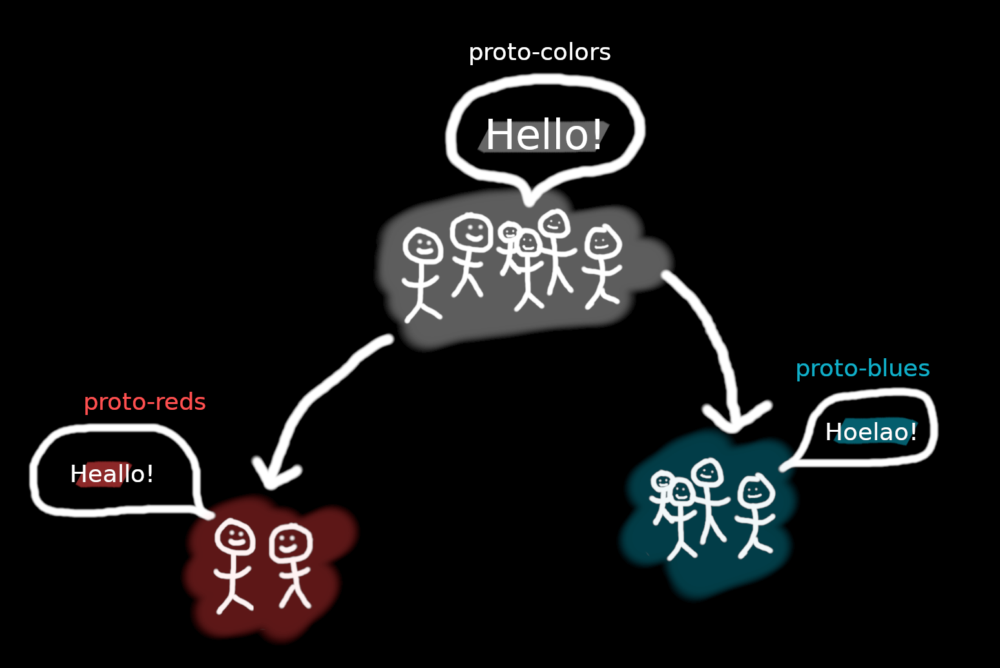
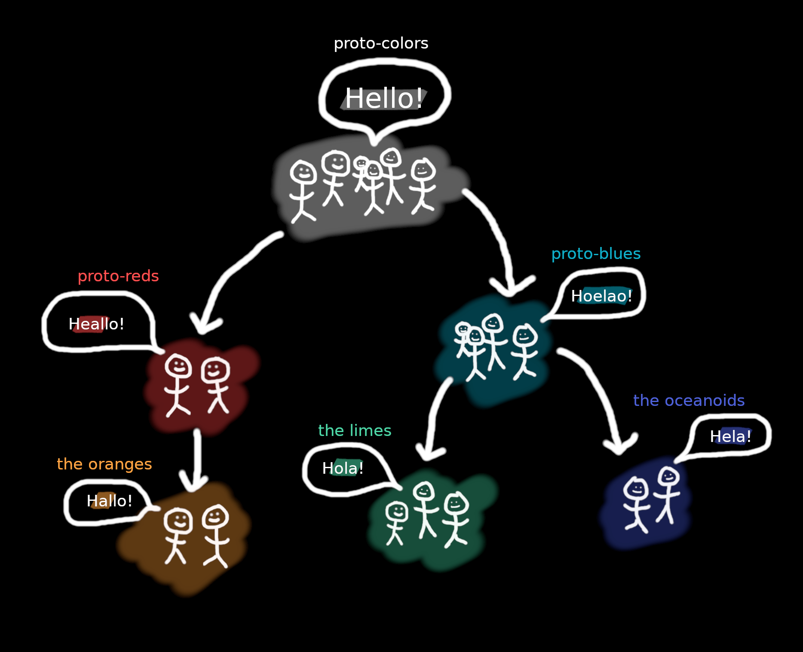

(Sidenote: if you don't really care about any of
this and just want to learn the language, skip to
the next section of this blog: Cases
)
Pie is great, but PIE is what we're here to talk about. What the heck am I talking about?!
PIE stands for Proto-Indo-European. Believe it or not,
this single language is the mother (or father) language
of almost all the languages that we speak today in Europe
and Asia. It's what explains English mother
, Spanish
madre
, Serbian матер
(mater
), Latvian māte
, Bangla
মা
(mā), etc. all sounding like basically the same word.
If you still don't believe me (which you shouldn't, so
easily), here is a massive table of such collerations:
| English | mother | father | brother | sister | sit | two | three |
|---|---|---|---|---|---|---|---|
| German | Mutter | Vater | Bruder | Schwester | sitzen | zwei | drei |
| Latin | mater | pater | frater | soror | sedeo | duo | tres |
| Italian | madre | padre | fratello | sorella | sedersi | due | tre |
| Spanish | madre | padre | hermano | hermana | sentarse | dos | tres |
| Latvian | māte | tēvs | brālis | māsa | sēdēt | divi | trīs |
| Serbian | матер (mater) |
отац (otac) |
брат (brat) |
сестра (sestra) |
седети (sedeti) |
два (dva) |
три (tri) |
| Russian | мать (mat') |
отец (otec) |
брат (brat) |
сестра (sestra) |
сидеть (sidet') |
два (dva) |
три (tri) |
| Bangla | মা (Mā) |
পিতা (Pitā) |
ভাই (Bhā'i) |
বোন (Bōna) |
বসা (Basā) |
দুই (Du'i) |
তিন (Tina) |
| Hindi | माँ (maan) |
पिता (pita) |
भाई (bhaee) |
बहन (bahan) |
बैठना (baithana) |
दो (do) |
तीन (teen) |
As you can see, apart from a few exceptions,
all of the words share some sort of common form.
For example, the mother
words share the form
ma(t)-(r)
, father
–
p-d-(r)
or f/b-t-(r)
.
People aren't stupid, of course. They noticed all
this and figured that there must have been some sort
of common ancestor to all of these languages, given
how far away some of them are, yet how similar some
of their vocabulary is. And through a process called
reconstruction
they... reconstructed...
this common ancestor – Proto-Indo-European!
Well... it's more compilcated than that, of course.
You see, they noticed that some languages are more
similar than others. Take for example from the table
above Italian and Spanish padre
, but Serbian
and Russian "otac/otec" (the c
is
pronounced like the zz
in pizza
,
btw). So maybe these smaller groups of languages
have their own proto-languages and those bigger
proto-languages are all related to this one big ancestor
– Proto-Indo-European.
And this
actually makes a lot of sense when you think about it;
Especially given that these languages all seem to be
geographically close to eachother. Tribes move around and
seperate into different groups all the time. They split
up, part ways, evolve in different timeframes, different
periods, and most crucially, evolve their
languages and dialects in different ways at different
times.
Imagine a big ancient tribe called Proto-Colors
.
A beautiful united tribe, speaking a common tongue.
Now imagine that there is some unrest between the warm
colors and the cold colors of this tribe. So the tribe
splits in two! They split into Proto-Reds
and
Proto-Blues
.
When these two split up, in an effort to distinguish themselves from one another, they start speaking (deliberately or not) in different ways. With generations and generations being born, what was back then a small difference, which could be described as dialectical peculiarities, now becomes so drastic and so widespread, that the two tribes can now be said to be speaking different languages!
You can imagine that various tensions occur again between the two groups' members. The reds split into reds and oranges, get into a civil war, and the oranges beat the reds and become the defacto red state (ignore how blatantly racist this color analogy sounds). A similar thing happens with the blues, but this time the two communities learn to accept their differences and live in peace. Again, their language drifts into dialects, and finally into two different languages.

Which leads us to the present day. After all these millenia
and historical events, the days of Proto-Colors
seem old and bygone. All we have this day are a bunch of
scattered languages which sound similar but whith no attested
ancestor. This is exactly the situation that we find ourselves
in today. But thanks to some very smart people, we are able
to get a glimpse into these Proto-, unattested languages.
And I'd like to reïterate here that these are not some
hand-wavy theories
; Yes – these languages are
unattested, meaning that their existance hasn't been
confirmed with any direct evidence like manuscripts or remaining
speakers, but the overwhelming amount of facts of our current
world all point to these Proto-Languages' existances.
And that's
all that Proto-
means. An unattested language (
in our case, Proto-Colors, -Reds, and -Blues), whose
existance is heavily implied by existing attested
languages (in our case, orangese, limearian, oceanoidean, and the
extinct yellowish).
Proto-Slavic is the grandmother language to all of the slavic languages. Similarly to our Proto-Bluese, it is an unattested language, whose existance is heavily implied by its grandchildren.